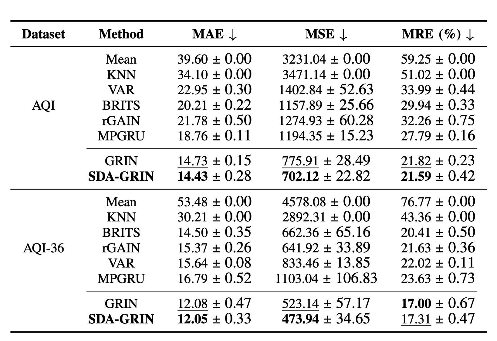
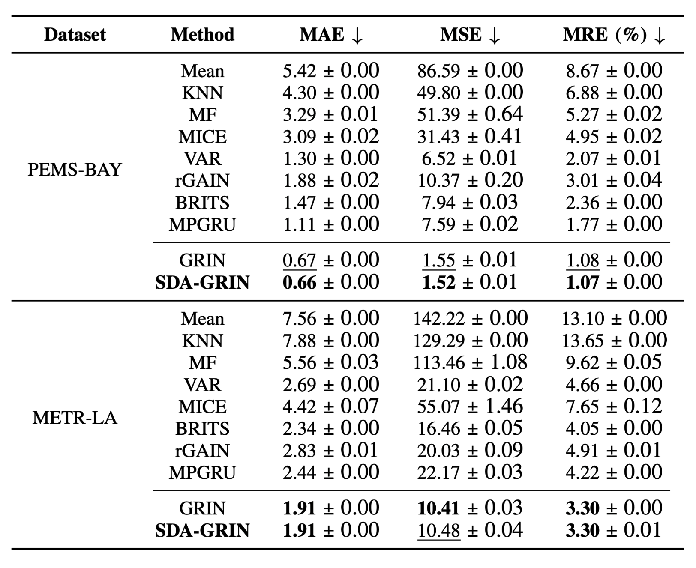
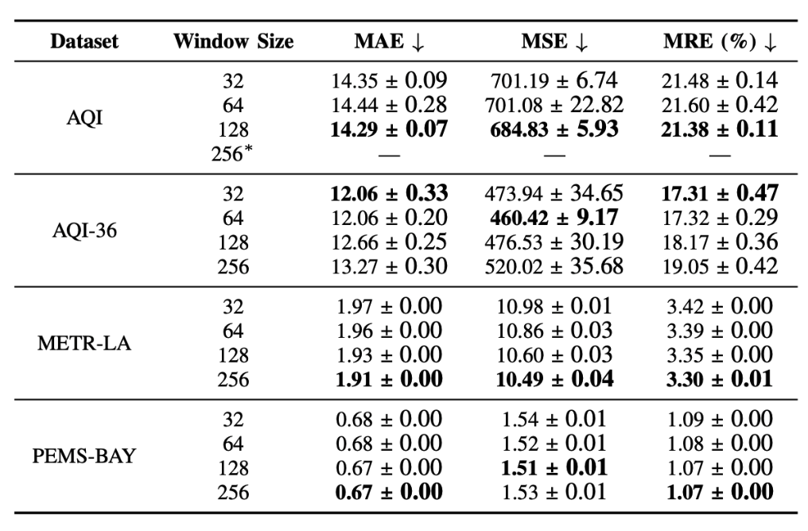
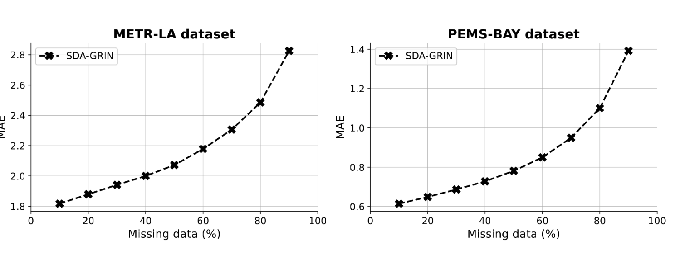

In various applications, the multivariate time series often suffers from missing data. This issue can significantly disrupt systems that rely on the data. Spatial and temporal dependencies can be leveraged to impute the missing samples. Existing imputation methods often ignore dynamic changes in spatial dependencies. We propose a Spatial Dynamic Aware Graph Recurrent Imputation Network (SDA-GRIN) which is capable of capturing dynamic changes in spatial dependencies. SDA-GRIN leverages a multi-head attention mechanism to adapt graph structures with time. SDA-GRIN models multivariate time series as a sequence of temporal graphs and uses a recurrent message-passing architecture for imputation. We evaluate SDA-GRIN on four real-world datasets from two domains: SDA-GRIN improves MSE by 9.51% for the AQI and 9.40% for AQI-36. On the PEMS-BAY dataset, it achieves a 1.94% improvement in MSE. Detailed ablation study demonstrates the effect of window sizes and missing data on the performance of the method.
The tables present the performance of all the methods. We conduct the training and testing of SDA-GRIN five times, reporting the mean and standard deviations. SDA-GRIN shows substantial improvements for both the AQI and AQI-36 datasets. Specifically, for AQI-36, our approach achieves a 0.25% improvement in MAE and a 9.40% improvement in MSE. For AQI, SDA-GRIN enhances MAE by 2.04%, MSE by 9.51%, and MRE by 1.05%. Regarding the METR-LA dataset, our method outperforms the best model with improvements of 1.49%, 1.94%, and 0.93% in MAE, MSE, and MRE, respectively. These improvements are primarily attributed to the awareness of SD changes gained through MHA. Moreover, SDA-GRIN’s effectiveness across various datasets from different domains underscores its generalizability.


The window size plays a crucial role in the model's performance. Four different window sizes were tested: 32, 64, 128, and 254. In the case of the PEMS-BAY, METR-LA, and AQI datasets, the largest window size (254) yielded the best results, as it allows the Multi-Head Attention (MHA) mechanism to capture a wider context, thereby improving its ability to understand the data patterns. However, for the AQI-36 dataset, the smallest window size (32) outperformed the others, likely because the dataset contains fewer variables (36) compared to over 200 in the other datasets.

We experimented with SDA-GRIN using missing rate values ranging from 10% to 90% on the PEMS-BAY and METR-LA datasets. As shown in bellow Figure, SDA-GRIN's performance decreases as the missing rate increases. This decline is due to the fact that at higher missing rates, a large portion of the variables' samples are filled with zeros (indicating missing values), which makes it challenging for the MHA mechanism to detect changes and adjust the graph structure effectively.

@article{eskandari2024sda,
title={SDA-GRIN for Adaptive Spatial-Temporal Multivariate Time Series Imputation},
author={Eskandari, Amir and Anand, Aman and Sharma, Drishti and Zulkernine, Farhana},
journal={arXiv preprint arXiv:2410.03954},
year={2024}
}